Welcome to the D5 Mod Kit
Version 1.1 · what changed: CHANGELOG.md
A modding studio for Disgaea 5 Complete (PC), together with the Outfit System, 175 outfits for 26 characters and a new playable character: Thunderlady, Girl Laharl's lightning alternative.
- Close the game. Extract the zip into the game folder, so you get
…\Disgaea 5 Complete\D5ModKit. - Double-click
Start D5 Mod Kit.batin that folder. - Press ⚡ Install & Play (bottom left). The first install takes a minute or two. Have fun.
Nothing else to install: the kit carries its own Python and every library it needs (in the
runtime folder). The original game files are backed up before anything changes, and
Restore original game… puts them back exactly as they were.
What you need
| Item | Details |
|---|---|
| Windows | Windows 10 or 11, 64-bit. |
| The game | Disgaea 5 Complete for PC, in any language setting. This is the Windows version (on Steam), not the Switch or PS4 game. The kit checks the game's program file when it starts; see Troubleshooting if it shows a warning. |
| Disk space | About 3.5 GB for the kit folder, plus about 1.5 GB of game data the mods add. |
| A clean game | The kit backs up the game files the first time it installs. If other mods or tools already changed the game, restore it first (Steam: right-click the game › Properties › Installed Files › Verify integrity of game files). |
Setting up (5 minutes)
- Close Disgaea 5. The kit can't change files the running game holds open.
- Find the game folder. Steam: right-click Disgaea 5 Complete › Manage › Browse local files.
It's the folder with
disgaea5.exeandData. - Unblock, then extract. Right-click the downloaded zip › Properties › tick Unblock (if you see it) › OK. This stops Windows from asking about every file. Then right-click the zip › Extract All… and choose the game folder. You get a
D5ModKitfolder next todisgaea5.exe.The kit also works from any other folder (for exampleDocuments\D5ModKit). It looks for the game through Steam by itself, and asks for the folder if it can't find it. - Start the kit: double-click
Start D5 Mod Kit.bat. If Windows shows Windows protected your PC, click More info › Run anyway. The first start takes a few seconds longer. The Home page shows Game: …\Disgaea 5 Complete at the bottom. If a red or orange message appears under it, read Troubleshooting. - Install the mods: press ⚡ Install & Play in the box at the bottom left. The kit backs up the original files, writes every enabled mod into the game (about 1–3 minutes the first time) and starts the game. From then on the box shows 🟢 Ready to play, and ▶ Play starts the game.
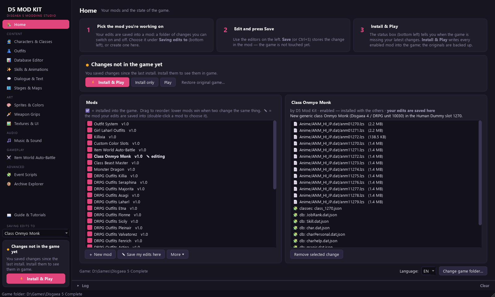
d5auto.dll,
d5core.dll) and change disgaea5.exe. Some antivirus programs distrust unsigned files like
these. If yours quarantines them, allow the game folder and the D5ModKit folder.What's included
Every mod below is switched on and installed by Install & Play. The Home page lists them; untick one to leave it out (see Turning mods on and off).
| Mod | What it adds |
|---|---|
| Outfit System | The Outfit entry in the character menu. Needed by every outfit mod and the new characters. |
| Girl Laharl Outfits | 13 outfits: Swimsuit, Attired Girl, Demonic Angel, Thunderlady, RK Girl, Beach Thunderlady, Uniform, Groom Thunderlady, Santa, Magical Girl, Supreme, Demon Detective, Young Thunderlady. With the Thunderlady mod on, the four Thunderlady looks belong to her instead (Girl Laharl keeps the other 9). |
| Thunderlady | Thunderlady, Girl Laharl's lightning alternative, as a character of her own: Girl Laharl's skills redone as lightning (Thunder Knuckle, Thunderlady's Wrath, Thunder Impact, Thunder Dimension), faster and more magical stats, her own weapon masteries, resistances and two evilities (Thunderlady's Dignity, Static Shock), 3 outfits (Beach, Groom, Young Thunderlady). Quest The Thunderlady. |
| DRPG Outfits · 24 characters | Disgaea RPG looks for Killia (4), Seraphina (11), Majorita (6), Asagi (9), Laharl (9), Etna (15), Flonne (14), Sicily (10), Pleinair (5), Valvatorez (9), Fenrich (3), Artina (9), Fuka (10), Emizel (2), Nisa (3), Mao (5), Salvatore (6), Almaz (2), Sapphire (4), Adell (4), Rozalin (15), Axel (2), Pram (4), Petta (2). Each character's outfits are a separate mod. |
The kit also fixes things the outfits need in the game's code: a character in an outfit still counts as that character for story checks (no crash after battles), and outfits are drawn at full size.
Finding the mods in game
| Feature | Where |
|---|---|
| Outfits | Main Menu (R) › Characters › pick a character › Outfit › choose Default or an outfit. The look changes at once. Long lists continue under More outfits…. |
| Thunderlady | The Quest Shop lists The Thunderlady: accept it, complete its condition and report back, and she joins (level 1). Her outfits are under Outfit like everyone's. |
Your saves
Back up your saves before playing with mods. They are in
%APPDATA%\Nippon Ichi Software, Inc\Disgaea 5 Complete (paste that into Explorer's address bar);
copy the SaveData folder somewhere safe.
The mods never change your saves, and you can load your existing saves with them. But a save that contains something a mod added (a character wearing a mod outfit) needs that mod installed. Before you remove such a mod, switch the characters back to Default and dismiss the added units, or keep a save from before you used them.
How the kit works
D5ModKit\mods. The game itself isn't touched while you edit.D5ModKit\state.Hover any field or button for an explanation. The Log at the bottom shows everything the kit did.
The pages, one by one
🧙 Characters & Classes
Every character and class: names, stats, aptitudes, movement, weapon mastery, resistances, evilities, learned skills, sprite, voice and face picture. ✨ New character / class… makes a new unit from any template.
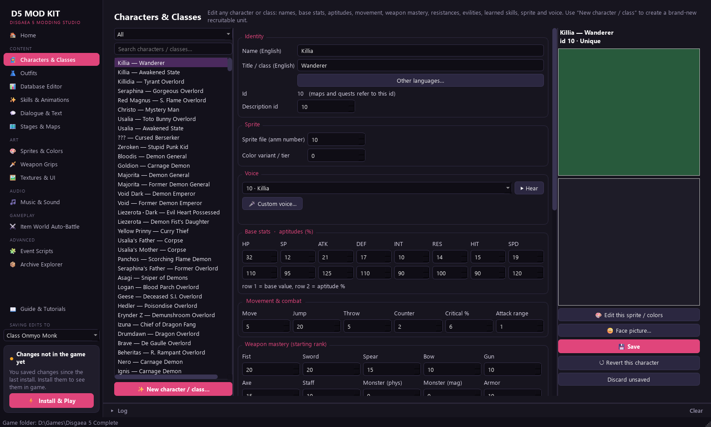
👗 Outfits
All outfits of all mods. ✨ New outfit… makes one from a sprite sheet (or from a copy of the character's sprite). The buttons under the list set face pictures and cut-in portraits, rename outfits and edit their colour parts.
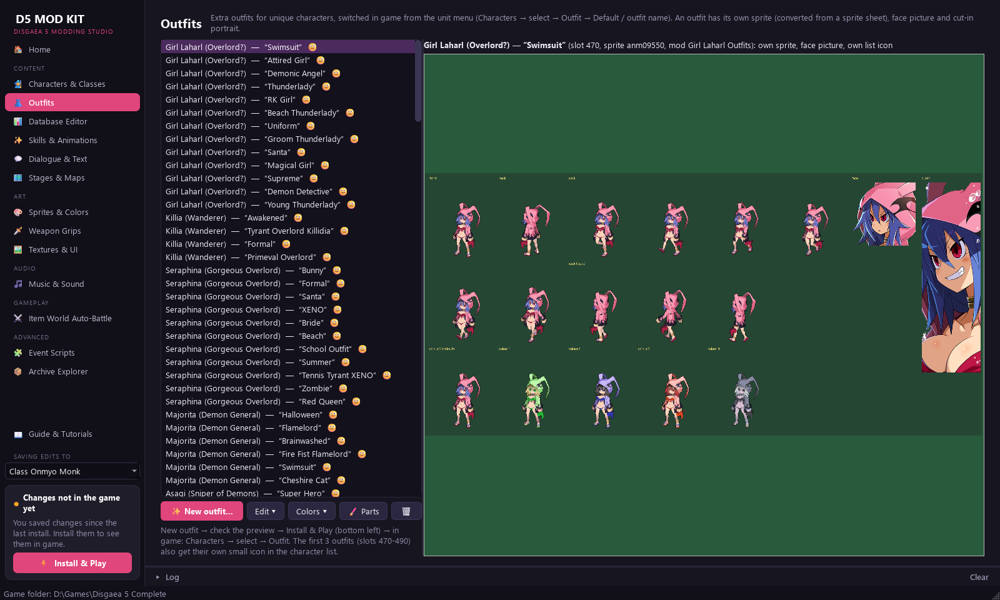
📊 Database Editor
All 90 game tables as spreadsheets: items, skills, evilities, classes, stages, quests, shops, Dark Assembly… Column headers explain each field when you hover them. You can export to CSV and import back.
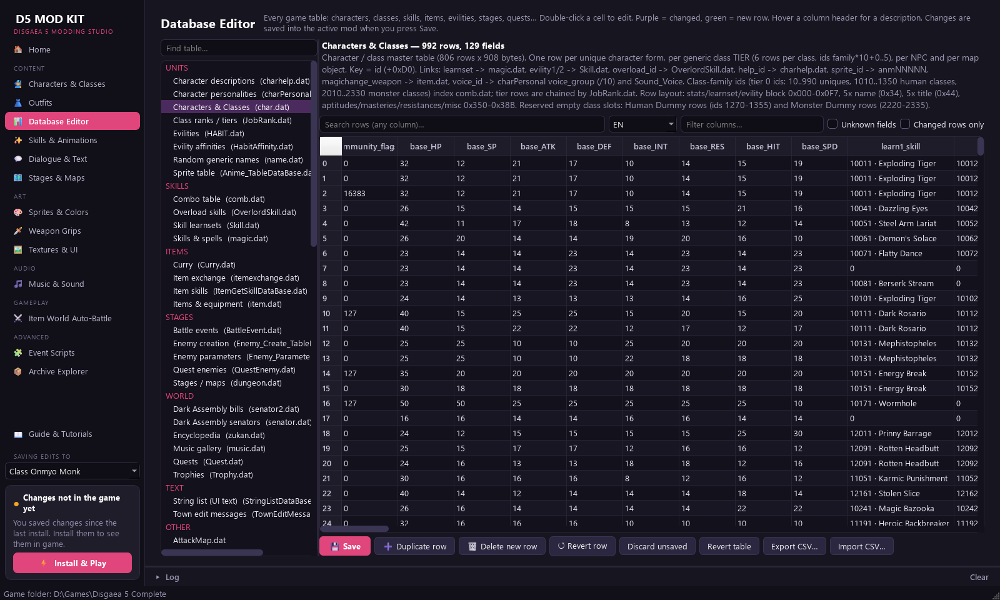
✨ Skills & Animations
What a skill looks like in battle. The 🎬 Timeline editor plays the whole skill inside the kit, the way the game shows it (its camera, effects, cut-in and the battle map; no game needed), and lets you move, retime and add effects, camera moves, poses and sounds. 🧩 Presets add ready-made dashes, jumps, close-ups, shakes, fades and hits; 🟥 Area shows and changes the panels the skill hits (and puts enemies on them to try it); 👥 Who learns it lists the characters and classes that learn it, at which level (the same list as on the Characters & Classes page). Give a skill another skill's animation, or put your own pictures into its effects. Preview in game sends your edit to the running game without a reinstall. Overloads are here too (the Overloads category, ⚡ New Overload…): see below.
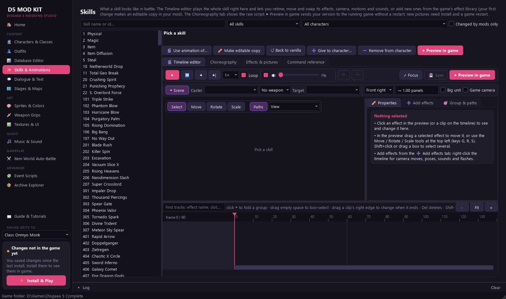
💬 Dialogue & Text
Search all 7,000 conversations, edit lines in every language, change speakers, add or remove message boxes, and find & replace across the whole game.
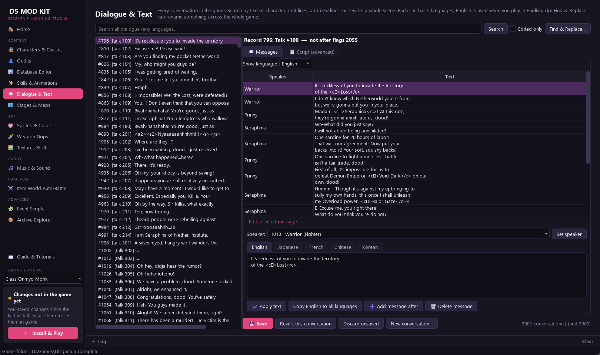
🗺 Stages & Maps
Battle maps: move, add or delete enemies and change their class, level, equipment and skills. Paint Geo Panels, place Geo Symbols, move the base panel, clone a stage.
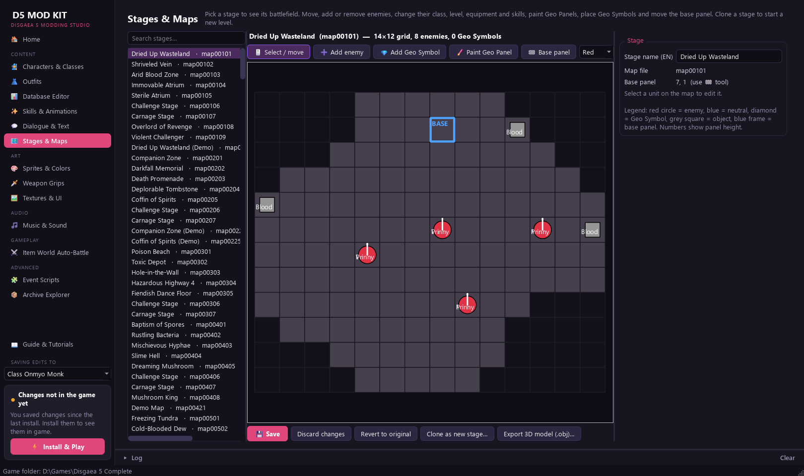
🎨 Sprites & Colors
Every character and monster sprite with a live animated preview. Click the character to select a part, then drag hue, saturation and brightness. Export sprite sheets, repaint them, import them again.
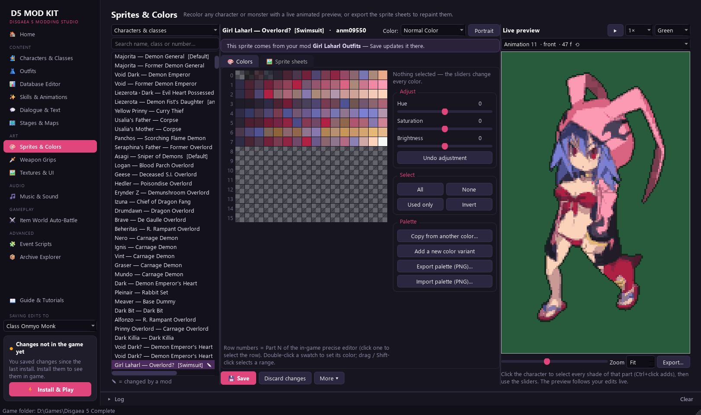
🗡 Weapon Grips
Where each character holds its weapon, per animation and frame: drag the weapon onto the hand.
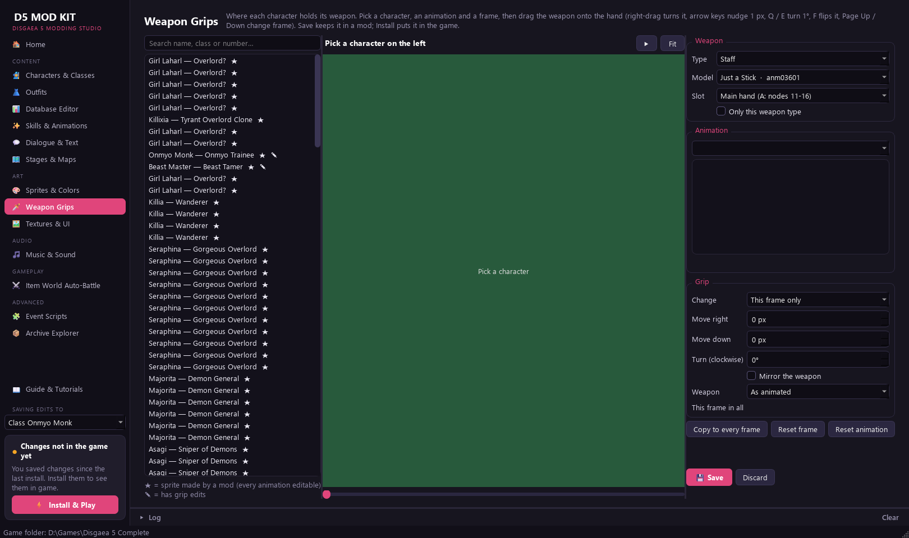
🖼 Textures & UI · 🎵 Music & Sound
Menus, windows, icons and logos as PNG pictures; all background music and sound effects. Replace them with your own.
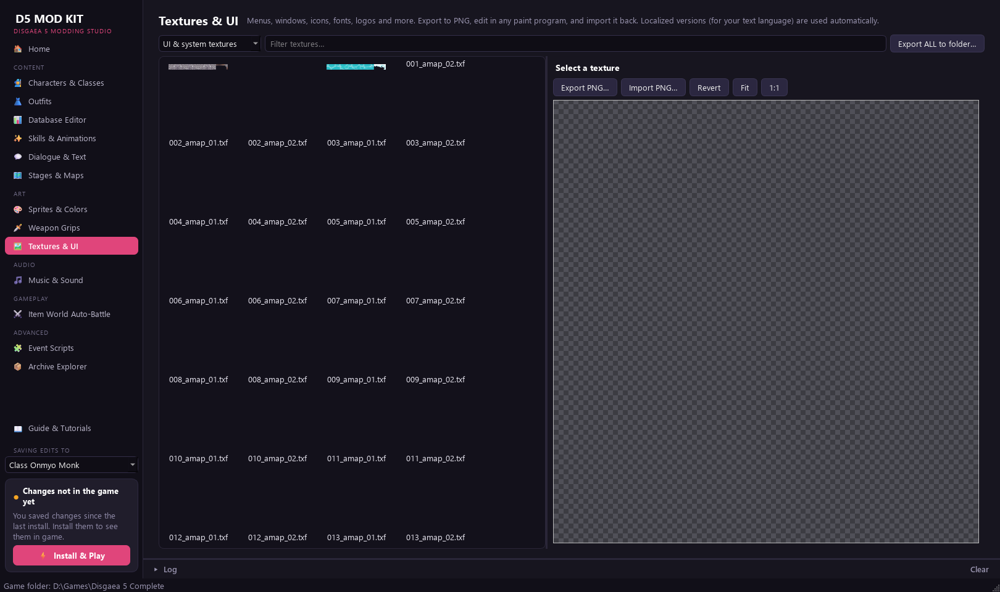
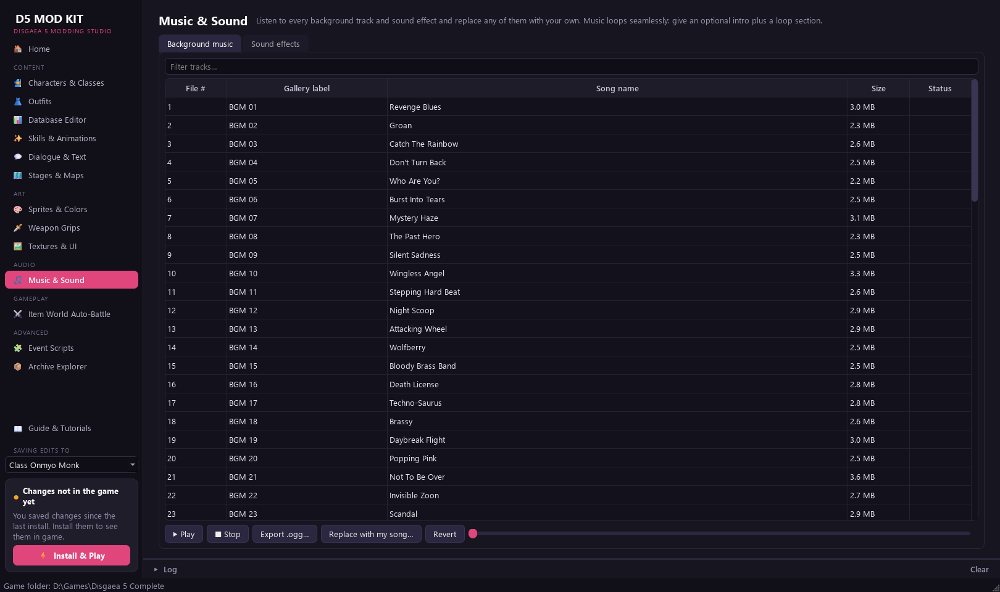
🧩 Event Scripts · 📦 Archive Explorer advanced
All 19,000 event scripts as editable text, and every file inside every game archive (preview, export, replace).
Turning mods on and off
- On the Home page the Mods list is grouped by category: Systems, Outfits (each with its character), New characters, Classes & monsters, Skills, Gameplay … Tick or untick a mod, or a whole group at once (a half-filled box: some of it is on).
- Type in the search box to find a mod by its name, a character or an outfit name.
- Click a mod: What it adds says it in words (its outfits by name, new characters, classes, skills, quests, database changes, sprites) and which mods need it; its files are listed below.
- Load order (button above the list) shows the order mods are installed in: drag to reorder. When two mods change the same thing, the lower one wins.
- Press ⚡ Install & Play (or Install only). The game gets exactly the ticked mods.
Packs. Select several mods (Ctrl+click), right-click › Group into a pack…: they show and switch as one entry. A pack only groups them: the mods themselves don't change, and Ungroup undoes it.
A mod that needs another one (every outfit mod needs Outfit System) shows ⚠ when that one is off; ticking it switches on what it needs too. Right-click a mod for more: edit its details (and its category), open its folder, share it, make your own version of it, delete it.
Restoring the original game
Home › Restore original game… puts every changed game file back exactly as it was before the first install. Your mods stay in the kit; install them again whenever you like. Do this before uninstalling the kit or deleting its folder.
Tutorial 1 · Your first edit
Rename Killia and give him more HP.
- Home › ＋ New mod. Name it My First Mod. Your edits now go into it.
- Open 🧙 Characters & Classes and pick Killia — Wanderer in the list.
- Change Name (English), and raise the HP base value (first row of Base stats).
- Press 💾 Save. The status box turns orange: Changes not in the game yet.
- Press ⚡ Install & Play, load a save and look at Killia's status.
Tutorial 2 · A new recruitable character
- Characters & Classes: select the character to start from (for example Seraphina). The new one copies its stats, skills and evilities.
- Press ✨ New character / class…. Choose Unique character, give it a name, title and up to three lines of description.
- Look: The template's look (keep Give it its own copy of the sprite ticked to recolour or repaint it), or any outfit of your outfit mods — Killia — Formal, Etna — …. A Disgaea RPG outfit is drawn again as a complete character of its own (every animation, face, portrait, cut-in); another outfit's sprite is copied. Tick Take that outfit out of the Outfit menu if it should only exist as the new character: your mod hides it, the outfit's own mod is not changed, and units already wearing it keep it.
- Stats: keep the template's or start from a preset (All-rounder, Heavy hitter, Spellcaster, Defender, Speedster, Gunner, Healer, Overlord — the numbers of one of the game's playable characters).
- Keep Save it in a new mod of its own ticked: one character = one mod, easy to share, update or switch off.
- Keep Make it recruitable with a new quest ticked and write the quest title, client and text. Long text is split into the quest board's lines for you.
- OK. Then shape it on the page and 💾 Save:
- Quick setup: another preset, or 📋 Copy from another… — any character's or class's base stats, aptitudes, movement, mastery, resistances, evilities, Overload or skills, base stats at a power % of your choice.
- ✨ New skill of their own…: a copy of any skill (its numbers and animation) with its own name, SP cost and learn level. Tick Then open the skill editor: the timeline editor opens on it, and ↩ Back to …'s setup brings you back.
- ✨ New evility of their own…: your own name and description; in battle it works like an evility of the game you choose.
- Evilities, Overload and learned skills are drop-down lists; hover an entry to read what it does.
- For its own face, press 🙂 Face picture… (a square picture, about 200×200).
- Install. In game, accept the quest at the Quest Shop, complete it and report back: the character joins.
Choosing a generic class (for example Warrior) as the template makes a new class (six ranks, hired at the Recruiter) instead.
Tutorial 3 · An outfit from a sprite sheet
A sprite sheet is a picture with one row of frames per animation (stand, walk, attack…), front and back views,
like the Disgaea RPG frame dumps. D5ModKit\SpriteSheet contains examples.
- 👗 Outfits › ✨ New outfit….
- Choose the Character, type the Outfit name shown in game, keep Convert a sprite sheet and pick the PNG.
- Optional: a Face picture (square; tick Mirror if it looks to the right) and a Cut-in portrait (tall; white backgrounds are removed).
- OK. The kit matches every frame to the game's own poses: the outfit animates exactly like the character, with colour variants made automatically. Check it in the preview.
- Install. In game: Characters › the character › Outfit.
Tutorial 4 · Recolouring a sprite
- 🎨 Sprites & Colors: search the character and select it. Pick the colour variant (Normal Color, Extra Color 1–4) at the top.
- Click the hair (or any part) in the live preview: its shades are selected.
- Drag Hue, Saturation and Brightness. The animation updates as you drag.
- 💾 Save, then install.
For a full repaint use the 🖼 Sprite sheets tab: Export all sheets…, paint them in any image editor (keep the size and layout), then Import all sheets….
Tutorial 5 · Disgaea RPG outfits command line
The kit builds Disgaea RPG looks for the game's characters by itself. It uses the DRPG sprites in
D5ModKit\DRPG Assets (Updated) and the list in d5lib\data\drpg_outfit_catalog.json.
- Find the DRPG unit numbers in
DRPG Assets (Updated)\Units IDs.txt. - Open
d5lib\data\drpg_outfit_catalog.jsonin Notepad. Find the character (for example"name": "Etna","class": 520) and add[unit number, "Outfit name"]to its"outfits"list. - Double-click
D5 Mod Kit Console.batand type
(520 is Etna'spython tools\drpg_outfits.py check python tools\drpg_outfits.py build 520"class"number in the catalog). Each outfit takes a few seconds. - Back in the kit, the outfits are in 👗 Outfits. Install and play.
A character that's new to the catalog needs its twin: the DRPG unit drawn exactly like the game's own
sprite. Then run python tools\drpg_outfits.py learn CLASS once. See docs\OUTFITS.md for
details, including new playable characters ("kind": "new_character").
Tutorial 6 · Weapon grips
- 🗡 Weapon Grips: choose the character, weapon type and animation.
- Drag the weapon onto the hand. Right-drag rotates it, the arrow keys nudge it, Q/E turn it and F mirrors it.
- Choose whether the change applies to this frame or the whole animation, play it back, then 💾 Save and install.
Tutorial 7 · A skill's animation
- ✨ Skills & Animations: search a skill (for example Mega Fire).
- Quick change: 🎬 Use animation of… plays another skill's animation instead.
- Your own version: open the 🎬 Timeline editor tab and press ▶ — the skill plays right there, with its camera, on a battle map. The first edit makes an editable copy in your mod. Drag effects in the preview or on the timeline. Right-click the timeline to add effects, poses, sounds and presets.
- Click anything to see it in ✏ Properties: folding panels (Transform, Timing, Drawing, Motion …) with a line of help under each setting. An effect drawn over a character when it should be under it (or the other way round): Drawing → Draw order and Nearer camera — they write the game's own commands, so the game draws it the same way.
- Poses and sounds are chosen by sight and by ear: 🏃 Change pose… shows every pose playing its animation, 🔊 Choose by ear… lists the sounds with their waveform and the skills that use them (click to hear).
- The badge at the top right of the preview says which camera you see: 🎥 Game camera (the skill's own, moving as in the game) or the free camera you get by looking around with the middle / right mouse button — click the badge, press C or play the skill to go back.
- Building blocks: the 🧩 Presets tab — for example Dash to the target and back, Close-up, Quake, Hit. Set the values, ➕ Add at frame…, then move it on the timeline.
- Where it hits: the 🟥 Area tab. Click panels to change the area, set how far the cursor reaches, and use Place enemies to see the skill hit several enemies. 💾 Save area writes it into your mod.
- Optional: Preview in game sends your version to the running game (edits show up without reinstalling).
- 💾 Save, then install to keep it. New pictures (Effects & pictures tab) need an install and a game restart.
Give a skill to a character with ➕ Give to character… or on the 👥 Who learns it tab (change the
level there, or remove it). More in docs\SKILL_EDITOR.md.
Overloads. Press ⚡ New Overload… (or pick one of the game's in the Overloads category): give it
a name and description, and choose what it does on the ⚡ Overload tab — the code of a game Overload (giant,
extra actions, revive…) or numbers of its own (power, element, area, effects). Its name gets a title banner of its
own (pick the style and colours, or use your own picture). Its animation is edited on the Timeline editor like any
skill's. ➕ Give to character / class… hands it to anyone, new characters included. In battle it needs Revenge
Mode, as always. More in docs\OVERLOADS.md.
Tutorial 8 · Dialogue and text
- 💬 Dialogue & Text: search for a word from the line you want to change.
- Select the message, edit it in Edit selected message, and change the speaker if needed.
- 💾 Save and install. For mass edits use Find & Replace….
Tutorial 9 · A stage's enemies
- 🗺 Stages & Maps: pick a stage. The map shows enemies, Geo Panels and the base panel.
- Add enemy, click a panel, then set its class, level, equipment and skills on the right.
- 💾 Save, install, and play the stage. Clone as new stage… copies a stage for your own level.
Tutorial 10 · Music and sounds
- 🎵 Music & Sound: pick a track. Play it, or Replace with my song….
- WAV files work as they are. For MP3, OGG or FLAC, install ffmpeg and make sure
ffmpeg.exeis on your PATH. - Install, then listen in game.
Tutorial 11 · Database (items, skills…)
- 📊 Database Editor: choose a table (for example item), search for the row and change the value. Hover a column header to see what it means.
- 💾 Save, then install. Changed rows only shows what your mods change. CSV export and import let you work in Excel.
Tutorial 13 · New classes and monsters command line
Make a generic class or monster from a Disgaea RPG unit, animated like a vanilla class or monster:
python tools\new_drpg_class.py UNIT TEMPLATE "Name" --titles "T1,T2,T3,T4,T5,T6" --desc "one line for Hire Character"
python tools\new_drpg_monster.py --helpRun them in D5 Mod Kit Console.bat. docs\CLASSES.md and docs\MONSTERS.md
explain every step.
Tutorial 14 · Sharing your mods
Home › right-click a mod › Share (export as .zip)… (or 📤 Share this character… on the Characters page). Give it a version. They use Home › More ▾ › Import / update from .zip… and install.
One installer .exe with your mods: they run it, press Install, done. Uninstall restores their game exactly.
python tools\export_pack.py "My Mods.exe" --title "My Disgaea 5 mods"docs\SHARING.md.Updates never break saves. A shared mod carries an identity: importing a later version of a mod you
already have updates it (the old version is kept in D5ModKit\state\mod_backups). When a mod you
import uses an id one of your other mods already uses (two people both made a character in the same free slot), the
kit moves it to a free one and remembers that, so every update lands on the same ids and recruited units stay what
they are. Your other mods are never changed.
Building on someone's work. Right-click their mod › Make my own version…: a copy with its own identity that remembers where it came from (shown under the mod's description). It takes the original's place in the game; the original stays as it was, switched off, and can still be updated.
To share the whole kit like this package, run python tools\make_release.py OUTPUT_FOLDER --zip.
Command-line tools
Double-click D5 Mod Kit Console.bat: a command prompt where python is the kit's own
Python. The tools work on the game folder the kit uses.
| Command | What it does |
|---|---|
python tools\install_mods.py | Install the enabled mods (the same as the Install button). |
python tools\drpg_outfits.py check | learn | build | Disgaea RPG outfits (Tutorial 5). |
python tools\new_drpg_class.py · new_drpg_monster.py | New class / monster from a DRPG unit. |
python tools\export_pack.py | Make a player installer .exe. |
python tools\make_release.py | Make a shareable copy of the whole kit (like this one). |
python tools\skilledit.py | Skill animations from the command line. |
python tools\grips.py · partcli.py | Weapon grips · outfit colour parts. |
python tools\qa_sprite.py · render_skill.py | Check a built sprite · render a skill's frames. |
Run any of them with --help for its options. The other files in tools
(d5ctl, battle_nav, walk…) drive the game for automated tests. They need
remote=1 under [debug] in d5auto.ini and are for developers.
d5lib\native) needs the Zig compiler:
runtime\python.exe -m pip install ziglang. Everything else works without it.Troubleshooting & FAQ
"Disgaea 5 Complete was not found"
Choose the folder that contains disgaea5.exe and Data (Home › Change game
folder…). Steam shows it under Manage › Browse local files.
⚠ "This disgaea5.exe is not the version the kit was made for"
The kit was made for the PC release's program file (its last update was in October 2018). If another tool changed your exe, verify the game files in Steam and start the kit again. With a really different version, the mods that change the game program (outfits, new characters and classes, colour slots, skills) refuse to install safely, with a message. Data-only mods still work.
⛔ "The game already has mods from another copy of the D5 Mod Kit"
Another kit folder (or an older copy of this one) installed mods into this game. Press Restore original
game… in that copy first, or copy its state folder into this kit (it holds the backups), or verify
the game files in Steam.
⛔ "A mods package is installed in this game"
A player installer .exe made with the kit is installed. Run it again and press Uninstall first.
The install failed
Close the game, then try again. The message (and the Log) says which file or mod caused it. If the game is under
C:\Program Files, start the kit as administrator.
Steam updated or verified the game, and the mods are gone
Press Install & Play again; the kit keeps its backups.
The game crashes
Note what you were doing. Then restore the original game and install again with fewer mods ticked to find the
cause. Check d5auto.log in the game folder: it records what the runtime did. Keep a backup of your saves.
Uninstalling the kit
Home › Restore original game…, then delete the D5ModKit folder. The game folder may still hold files the mods' runtime made while you played: d5auto.log,
d5looks.bin, d5core_live*.dll and
d5live_script.dat. Delete them too if you like.
Updating the kit
To move to a newer copy of the kit without losing anything:
- In the old kit, press Restore original game….
- Copy your own mods (any folder in
old\modsyou made) into the new kit'smodsfolder. - Start the new kit and install.
Or copy the old kit's state folder into the new one instead of restoring. It holds the backups of the
original game files, so the new kit takes over where the old one left off.
Technical documents
For modders who want to know how things work inside, see D5ModKit\docs:
README.md | Overview of the kit and its limits (in the kit folder). |
OUTFITS.md · COLORS.md · WEAPON_GRIPS.md | Outfits, the DRPG builder, colour parts, grips. |
CLASSES.md · MONSTERS.md | New generic classes and monsters. |
SKILL_EDITOR.md · SKILL_ANIMATIONS.md · VOICES.md | Skills, effects, voices. |
OVERLOADS.md | New Overloads and changing the game's. |
CHARACTER_STUDIO.md | New characters: outfit looks, presets, skills and evilities of their own. |
SHARING.md | Sharing and updating mods between kit users, player installers, the kit's release. |
FORMATS.md · ANM.md · DATABASE.md · MAPS_AND_OBJECTS.md · EXE_ANALYSIS.md | The game's file formats and program. |
Disgaea 5 and Disgaea RPG are © Nippon Ichi Software / NIS America. This is an unofficial fan modding kit; the art in the mods comes from those games. Share it with people who own the game.